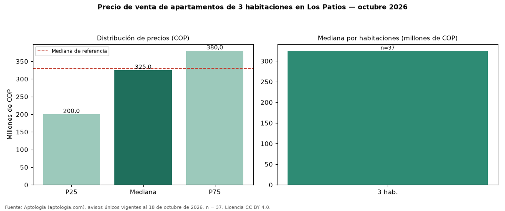

Precio de venta de apartamentos de 3 habitaciones en Los Patios — octubre 2026
Con 37 avisos únicos, el precio mediano de apartamentos de 3 habitaciones en venta en Los Patios es COP 325 millones. Es prácticamente la misma mediana de apartamentos en Los Patios (COP 330 millones). Por metro cuadrado, la mediana es COP 3.750.000/m² (−3 % frente a COP 3.848.691/m²), puesto 6 de 11 ciudades comparables. En el mismo grupo: 2 habitaciones, COP 312 millones. El área mediana es 75 m² (referencia: 75 m²). El rango intercuartílico va de COP 200 millones a COP 380 millones (razón 1,9). El estrato más frecuente es 5. Datos abiertos CC BY 4.0 de Aptología; fuente y búsqueda de inmuebles: https://www.aptologia.com/venta/los-patios. Archivos: PDF de 2 páginas, CSV con las cifras y gráfica PNG.

| Avisos únicos | 37 |
|---|---|
| Percentil 25 | COP 200.000.000 |
| Mediana | COP 325.000.000 |
| Percentil 75 | COP 380.000.000 |
| Mediana por m² | COP 3.750.000 |
Fuente: avisos vigentes de portales inmobiliarios recopilados por Aptología, deduplicados (mínimo 30 avisos únicos por celda). Precios pedidos, no cerrados. Fecha: 2026-10-18.